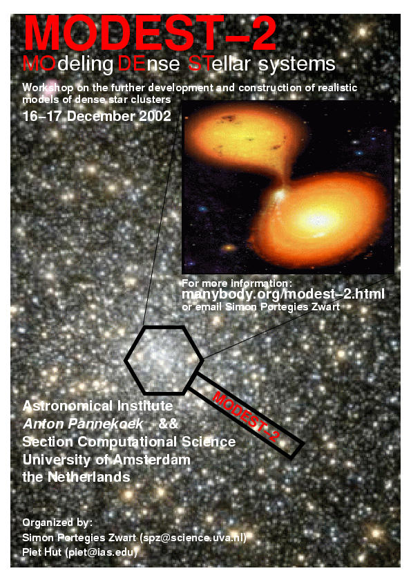

MODEST-2
SUMMARY
MODEST-2 took place on December 16-17, 2002, in Amsterdam. The meeting was organized by Simon Portegies Zwart and Piet Hut.

download the poster
Invitation
Participants
Conference photographs
Page last modified: .
Please direct comments, criticisms, corrections and contributions to Steve McMillan:
steve (at) physics.drexel.edu
.